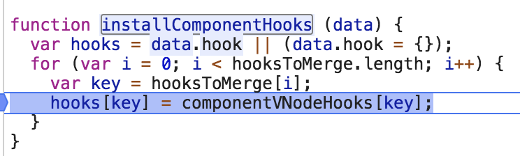

终于弄懂了定义一个vue实例到渲染成页面DOM的整个过程，心情炒鸡棒，今天打算开始了解一下vue的另外一个核心思想 — 组件化。
所谓组件化，也就是将页面根据一些规则（业务/逻辑等）划分成一个个组件（Component），每个组件的css,js,模版,图片等资源都相互独立，每个组件的资源都放在一起开发维护。这样便于维护以及实现可复用～～～
组件化
组件的 vnode 是没有 children 的
1. createComponent
组件的创建最开始走的和vue源码分析-数据驱动章节的流程是一样的。也是，new Vue() ==> this._init() ==> initMixin() ==> $mount() ==> mountComponent() ==> _render() ==> $createElement ==> createElement() ==> _createElement()
但是，在_createElement()方法中，有一个判断，与之前的不一样if (typeof tag === ‘string’) 在vue源码分析-数据驱动章节中，tag是一个‘div’满足，则直接进入判断中。此处是一个组件，tag则是一个对象
在vue源码分析-数据驱动章节中，tag是一个‘div’满足，则直接进入判断中。此处是一个组件，tag则是一个对象
所以，直接进入createComponent方法中，并且传入了一系列的参数（tag,data,context,children）,其中只有tag以及context有值，并且context其实就是Vue。
其中context.$options._base其实就是Vue构造函数，Ctor就是tag，Ctor如果是对象的话，则会调用Vue.extend方法
extend方法主要是根据Vue构造函数创建一个Sub构造函数，并且在把传入的options和Vue上面原本挂载的options进行一个mergeOptions，将options内容进行合并，并且赋值给Sub.options，则当前组件就会含有自己的options，以及挂载在Vue上的全局component，directive，filter
其中，validateComponentName是用来检验组件名称是否合法合理。
sub构造函数中含有this. _ init()其实也就是上一章节中 _ init方法。
因此后期就会再次进入 _ init方法创建组件，直接进入initInternalComponent方法中，在initInternalComponent方法中，就是一系统的赋值等。
2. patch
在上面createComponent之后，进入createComponent方法中
其中有一个installComponentHooks的方法，hooksToMerge其实就是一个对象，含有init，prepatch,insert,destory这四个字符串，通过便利，给data上添加上钩子函数（hook）

将componentVNodeHooks对象中的相应的钩子函数赋值给data。
接着执行createComponent里面的方法new VNode，返回一个vnode
执行另外一个createComponent方法，调用原本赋值再vnode上的hook函数，将i的init方法赋值给i，再调用i方法
进入原本hooksToMerge对象赋值给data上的init方法，通过createComponentInstanceForVnode函数创建组件对象
在createComponentInstanceForVnode函数中，最终返回new vnode.componentOptions.Ctor(options)，而vnode.componentOptions.Cto也就是我们在1. createComponent中利用Vue构造函数创建的一个Sub构造函数
再次回到sub构造函数中，调用了this. _ init方法，其实也就是我们在vue源码分析-数据驱动章节中new Vue()后立马执行的初始化
再次进入vue.prototype. _ init方法中，此时由于是组件，会调用initInternalComponent(vm, options);方法，而此时的没有el这个属性值没有值，则就不会去执行vm.$mount(vm.$options.el);
在initInternalComponent方法中，进行了一系列的赋值。其中注意：opts._parentVnode = parentVnode，则组件对象上的_parentVnode是一个占位node
继续回到componentVNodeHooks中，调用child.$mount方法进行挂载，调用mountComponent，在mountComponent函数中定义 updateComponent = function () { vm._update(vm._render(), hydrating); }; 走起vue源码分析-数据驱动章节的流程（_render() ==> $createElement ==> createElement ==> _createElement ==> ）里层的元素组件进行上面的流程